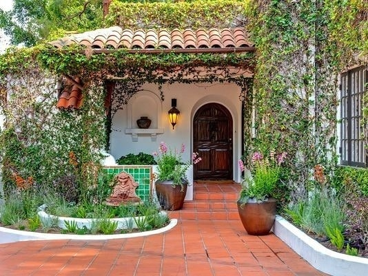

Downtown Phoenix Historic District Real Estate: Bungalows and Tree-Lined Streets Near the Urban Core
Welcome to Downtown Phoenix Historic District
Nearly a century of Craftsman bungalows, Tudors, and Spanish Colonials near downtownWhat to Love
- 36 protected historic districts with distinct architecture
- Heritage Square, Encanto Park, and the Grand Avenue arts corridor
- A walkable restaurant scene: Wren & Wolf, Windsor, Crown Public House, and more
- 10 to 15 minutes from Chase Field, Footprint Center, and downtown's museums
What is the Downtown Phoenix Historic District known for?
Just north and west of the downtown core, Phoenix has a patchwork of historic neighborhoods — including Willo, Encanto-Palmcroft, F.Q. Story, Roosevelt, Garfield, and Coronado — where tree-lined streets, irrigated lots, and Craftsman-to-Spanish-Colonial architecture keep the city's early-20th-century character on display.
The City of Phoenix formally recognizes 36 residential historic districts, each protected by Historic Preservation (HP) overlay zoning that reviews certain exterior changes and demolition requests, so the character of these blocks is largely locked in rather than left to chance.
What types of homes are in the historic district?
Architecture ranges from Craftsman bungalows and English Tudor cottages to Spanish Colonial Revival haciendas and later mid-century Ranch homes, most built between the 1910s and 1950s. Willo is known for its dense mix of Tudors and bungalows, while Encanto-Palmcroft is known for larger, more formal homes on wider, more manicured lots.
Many lots in these neighborhoods are still on the historic flood-irrigation system rather than standard sprinklers, which keeps the mature palm and citrus canopy alive but is a maintenance detail worth understanding before buying.
What landmarks and culture define the area?
Heritage Square in Coronado preserves several of Phoenix's oldest buildings, including the 1895 Rosson House. Grand Avenue's arts corridor and the Roosevelt Row district host the monthly First Fridays Artwalk, with galleries, murals, and restaurants inside converted historic bungalows.
Encanto Park, dating to 1935, offers a boating lagoon, municipal golf course, and shaded picnic grounds in the middle of the Encanto-Palmcroft district. The Burton Barr Central Library, Phoenix Art Museum, and Heard Museum are all a short drive or light-rail ride away.
What restaurants give the area its character?
Restaurants are a big part of the neighborhood's cultural identity, with a dense cluster of well-regarded spots inside or minutes from the historic districts: Wren & Wolf and The Farish House for a stylish dinner, Windsor for an all-day Central Avenue favorite, Crown Public House near the Melrose District for craft beer and a backyard patio, and Glai Baan for Thai street food. Downtown proper adds The Arrogant Butcher and Centrico for a night out before a game or show.
How close are downtown Phoenix's museums and sports venues?
| Destination | Typical Distance |
|---|---|
| Phoenix Art Museum & Heard Museum | 5–10 minutes |
| Arizona Science Center & Children's Museum of Phoenix | 10 minutes |
| Chase Field (Arizona Diamondbacks) | 10–15 minutes |
| Footprint Center (Phoenix Suns & Mercury) | 10–15 minutes |
Several of these neighborhoods also sit along or near the Valley Metro light rail line on Central Avenue, making it possible to reach a Diamondbacks or Suns game, a museum afternoon, or a Roosevelt Row gallery walk without driving or parking downtown.
How connected is the historic district to the rest of the Valley?
Valley Metro's light rail runs along Central Avenue through several of these neighborhoods, connecting residents directly to downtown Phoenix, ASU's downtown campus, and Sky Harbor International Airport without a car.
What should buyers know before purchasing in the historic district?
Because homes in an HP-overlay district go through a review process for exterior alterations, additions, and demolitions, buyers planning significant renovations should confirm what's allowed for a specific property before writing an offer.
Homes built in the 1920s–1940s may still have original electrical, plumbing, or foundation elements; a pre-purchase inspection from an inspector familiar with historic homes is particularly valuable here.

Common Questions
How many historic districts does Phoenix have?
The City of Phoenix recognizes 36 residential historic districts, each protected by Historic Preservation overlay zoning that reviews certain exterior changes and demolition requests.
What neighborhoods make up the Downtown Phoenix Historic District area?
This area includes several distinct historic districts near the downtown core, including Willo, Encanto-Palmcroft, F.Q. Story, Roosevelt, Garfield, and Coronado, each with its own character and architecture.
What architectural styles are common in these neighborhoods?
Craftsman bungalows, English Tudor cottages, and Spanish Colonial Revival homes are common, along with later mid-century Ranch homes, most built between the 1910s and 1950s.
Can I renovate a home in a Phoenix historic district?
Yes, but exterior changes, additions, and demolitions typically go through a Historic Preservation review process. Buyers planning major renovations should confirm what's allowed for a specific property before purchasing.
What are some popular restaurants near the historic district?
Wren & Wolf, The Farish House, Windsor, Crown Public House, Glai Baan, The Arrogant Butcher, and Centrico are all popular choices in or near the historic districts and downtown Phoenix.
How far is downtown Phoenix's arena and ballpark from the historic district?
Chase Field and Footprint Center are both typically a 10- to 15-minute drive (or a Central Avenue light rail ride) from the historic neighborhoods, making it easy to catch a Diamondbacks, Suns, or Mercury game without a long commute.


Considering a Move to Downtown Phoenix Historic District?
Call 480-734-0870 or email laura@laurajorden.com for current listings and market data.
Contact Laura